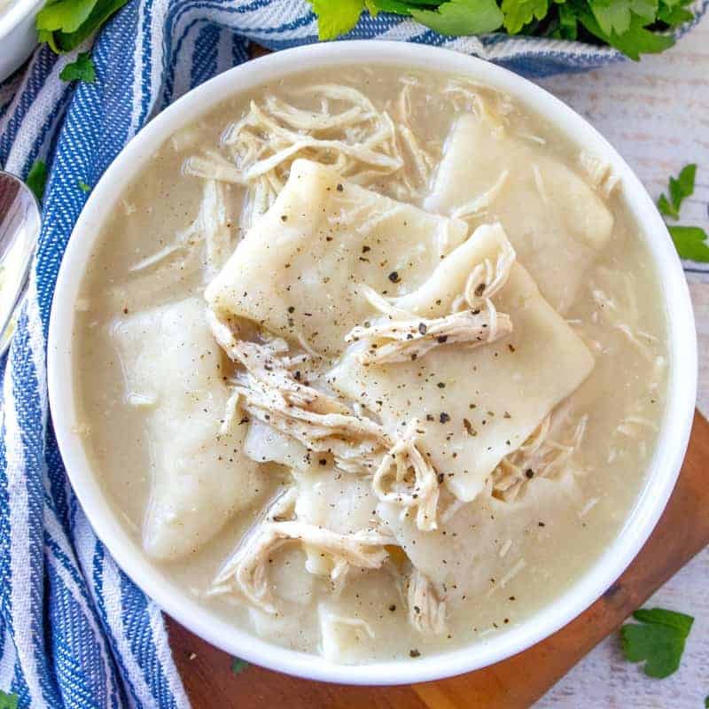

Old-Fashioned Chicken and Dumplings Recipe

Old-Fashioned Chicken and Dumplings is a super simple recipe. Flat strips of dough simmered in a yummy broth with tender chicken.
Ingredients
- 3 cups chicken (about 2-3 chicken breasts)
- 2 quarts chicken broth
- 2 cups all-purpose flour
- ½ teaspoon baking powder
- 2 tablespoon cold salted butter, cubed
- 1 cup milk
- 2 tablespoon olive oil
- salt and pepper, to taste
Directions
- Preheat oven to 350F degrees. Spray a baking sheet with nonstick cooking spray.
- Place chicken breast on the baking sheet and Drizzle a little olive oil on the chicken and season with salt and pepper.
- Bake chicken for about 45 minutes. Once the chicken is cooked, shred it with two forks.
- Pour 2 quarts of chicken stock or broth into a large pot and start warming it up on the stove top while you make the dumplings.
- In a medium bowl, combine flour and baking powder. Then add in cubed butter.
- Combine using your fingers, fork or pastry cutter.
- Pour in the milk. Mix it all together.
- Dust your counter with a generous amount of flour. Place dumpling dough on the counter and dust it with more flour.
- With a rolling pin, roll the dough out to about ¼" thickness. Be sure to add flour as necessary to keep it from sticking underneath or to your rolling pin.
- Using a knife or a pizza cutter, start cutting out your dumplings into squares.
- Dust dumplings with a bit more flour. The extra flour is all gonna help keep them from sticking but will also thicken your chicken broth some as well when you add them to the pot.
- Bring chicken broth up to a boil. Add in shredded chicken and stir.
- Begin adding dumplings one at a time so they don't all stick together. Stir frequently while adding them.
- Allow dumplings to cook for about 15-20 minutes. You should notice your broth starting to thicken (from the extra flour) and your dumplings may start to sink a little to the bottom because they are soaking up the broth.
- Take one out and taste test it. It shouldn't have a doughy taste anymore.